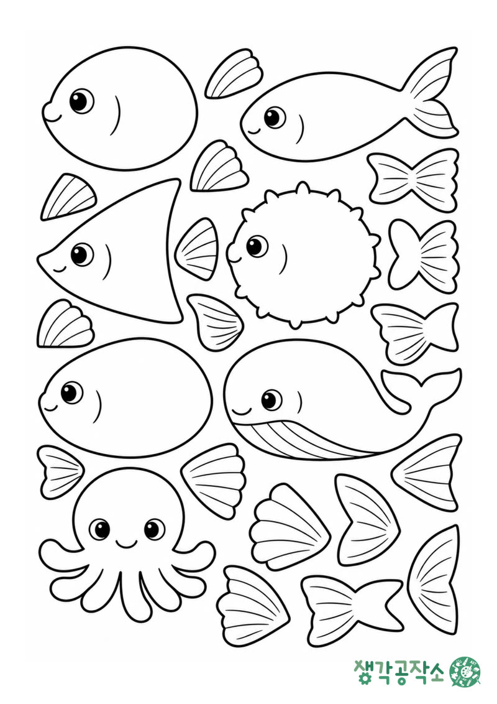

← 활동 이야기
2026.09.27 · 오감쑥쑥 도안 나눔
물안경 도안, 여름 바다를 오려 붙여요 🥽
거실 바닥에
종이 물고기를 늘어놓으면,
아이는 벌써
낚싯대부터 찾아요. 🎣
안녕하세요,
생각공작소입니다. :)
오늘은 물고기 낚시놀이
도안을 드려요.
색칠해서 오리고
클립만 하나씩 끼우면
바로 낚시를 할 수 있어요.
오감쑥쑥 수업에서 아이들과 만든
'여름을 낚아요'를
집에서도 해 보실 수 있게
준비했답니다.

준비물은 집에 있는 것들이에요.
인쇄한 도안, 색연필,
가위, 풀이 있으면 되고요,
낚시용으로 클립과 자석,
나무젓가락과 실을 챙겨 주세요. ☺️
①
A4 용지에 100%로 인쇄해요.
'페이지에 맞춤'을 끄면
도안이 아이 크기 그대로 나와요.
②
물고기 몸통과 지느러미, 꼬리를
아이가 마음껏 색칠해요. 🖍️
③
진한 선을 따라 오려요.
문어 다리 사이처럼
안쪽으로 파인 곳은
보호자님이 조금 도와주세요 :)
④
몸통에 지느러미와 꼬리를
풀로 붙여요.
접는 선이 없어서
오린 그대로 붙이면 되거든요.
마음에 드는 것만 골라
한쪽에만 붙여도 괜찮아요.
⑤
물고기 입에 클립을
하나씩 끼우고,
나무젓가락에 묶은 실 끝에
자석을 달아요.
자석은 아이가 입에 넣지 않게
냉장고 자석처럼
큼직한 걸로 쓰세요.
얇은 복사지에 인쇄했다면
도화지에 한 번 덧붙여 주세요.
클립을 끼워도
물고기가 휘지 않고 튼튼해요. 🐟
수업에서는 자석 대신
까슬이와 보슬이를 붙여
물고기를 낚았어요.
상자 뚜껑에 종이를 깔아
바다를 만든 아이도 있었고,
한 마리 낚을 때마다
두 팔을 번쩍 드는 아이도 있었죠. 🙌
오감 쑥쑥! 생각 쑥쑥!
📞 생각공작소 032-277-2007